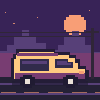

Фритрек и нулевой спринт: Подготовка к работе

Это было самое начало пути. На этом этапе важно было понять, какие инструменты понадобятся, как устроено обучение и получится ли встроить его в привычный ритм.
Первую страницу я открыл в браузере сразу после сохранения файла. Пара строк HTML вдруг стала чем-то, что можно увидеть и показать.